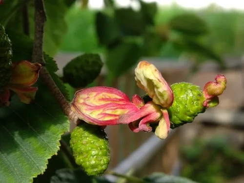

Red tongues protrude from alder cones
A thin red blade growing out of an alder’s cone-like fruiting structure may be a fungal gall. Its attachment to a scale is the most useful detail to photograph.

What to look for
Inspect the small cone-like female structures on an alder. A flattened, tongue-shaped outgrowth projects from between their scales. It may be green at first, turn red and finally dry brown.
Check the pattern
Trace the growth back to its base on a scale. A leaf caught between branches pulls free, while a fungal tongue gall grows from the cone itself. Several tongues may share one structure.
What to do
Examine other cones on the same branch before taking action. Photograph an attached example with a normal cone in the frame. A few galls on otherwise vigorous growth usually require only observation.
When to check again
Return as the cones mature. Older tongues can persist after their bright colour fades. Record which ones were already present so you can recognise newly affected cones the following season.
Follow one cone through the season
Choose a cone with a single tongue and photograph it against a ruler. Return when the tissue dries and check whether the growth remains fixed to the same scale. A leaf or strip of bark caught in a branch rarely preserves this precise attachment.